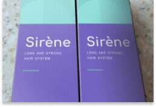
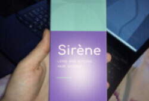

A ganância será punida! Um processo criminal foi aberto contra pessoas que vendiam produtos ineficazes contra a calvície.
Um grande escândalo estourou na UE: um grupo de revendedores de renomadas empresas farmacêuticas estava sob investigação (finalmente!!!). Conspiraram pelo lucro e promoveram no mercado interno medicamentos inúteis, ineficazes e caros para combater a alopecia. Nosso correspondente descobriu como empresários desonestos ganhavam dinheiro.
Em 2020, a polícia do país recebeu inúmeras reclamações de compradores enganados que compraram produtos de marcas conhecidas para crescimento do cabelo. Os medicamentos caros não só não os ajudaram a curar a alopecia ou pelo menos a melhorar de alguma forma a condição de seus cabelos, como também em alguns casos eles causaram reações alérgicas graves e até psoríase. Algumas pessoas tiveram um processo regressivo: o cabelo caiu completamente! Linda Mendonça não teve mais sorte: ela literalmente ficou careca diante de seus olhos.
Linda Mendonça antes de usar o popular estimulante de crescimento do cabelo e ... 15 minutos depois
Os produtos apresentados à polícia foram encaminhados para exames laboratoriais. Os especialistas ficaram surpresos e horrorizados ao descobrir muitos componentes nocivos neles, como o formaldeído (usado para embalsamar cadáveres), o mais inofensivo! Parabenos, metais pesados e muitas outras substâncias contidas em produtos de marcas bem conhecidas podem causar reações alérgicas, contribuir para a morte dos folículos capilares e seu envelhecimento precoce. Como esse veneno foi parar no mercado da UE?
O dinheiro é mais valioso do que a consciência
Como costuma acontecer, a culpa foi da ganância humana. Os comerciantes de empresas conhecidas lutaram injustamente no mercado. Eles promoveram marcas que lhes pagavam grandes quantias de dinheiro para anunciar ... e subornar os especialistas! Os habitantes de nosso país são literalmente enganados às escondidas.
E tudo ficaria bem, se o produto simplesmente não correspondesse ao efeito declarado. No entanto, as autoridades não podiam ignorar os danos diretos à saúde (sem dúvida, os funcionários têm parentes que também podem cair nas artimanhas dos comerciantes).
A investigação continua, já foram feitas acusações contra 49 pessoas, e o caso continua: todos os envolvidos, incluindo representantes das autoridades reguladoras que certificaram medicamentos nocivos em nosso país, serão responsabilizados.
O especialista da Associação Internacional de Tricologia (IAT) está horrorizado.
Xavier Garcia, doutor em ciências médicas, médico sênior, tricologista sênior, 32 anos de experiência profissional.
“Esta é uma situação terrível. As pessoas são o tesouro da nossa nação. Como pessoa e como médico, estou indignado. Eles tiram a beleza e a saúde dos nossos cidadãos por causa do dinheiro. Quando vi a composição destes soros, cápsulas e xampus, meu cabelo literalmente balançou na minha cabeça e por pouco não caiu de choque. Você não deveria nem manchar isso nos sapatos, muito menos na cabeça! "
Perguntamos ao Dr. Garcia quais as alternativas de nossos compatriotas para o combate à alopecia e à restauração capilar.
“Antes de tudo, deve-se usar apenas produtos naturais: sem conservantes, produtos químicos inorgânicos prejudiciais ou outras impurezas prejudiciais. O ideal é ir para a natureza, colher ervas, molhar, amassar, deixá-las fermentar e aplicar na cabeça. Os ingredientes naturais são a melhor maneira de estimular o crescimento do cabelo: eles fortalecem os folículos capilares ativos e despertam os dormentes, "estimulam o crescimento do cabelo e lhes dão força".
Naturalmente, a maioria das pessoas não tem essa oportunidade. Vivemos em um ambiente urbano moderno, afinal é o século 21. Mas existem remédios naturais maravilhosos, incluindo aqueles criados por nossos médicos. Por exemplo, Le Clere Sirene este é um desenvolvimento maravilhoso de nossos cientistas do setor de saúde. Este é um produto totalmente não comercial. Você não o encontrará em grandes shoppings ou farmácias e não o verá na TV. Mas funciona e nunca danificará seu cabelo ou couro cabeludo.
Pedimos que o senhor conte-nos mais sobre este medicamento para nossos leitores.
“O produto Le Clere Sirene à base de óleos e ervas orgânicos. É uma fonte 100% natural de colágeno e quitina, dos blocos de construção do cabelo. Como ocorre a calvície? Inicialmente, o cabelo não recebe nutrição suficiente, por isso à medida que cada vez menos nutrientes são fornecidos ao bulbo, ele morre. Anteriormente, acreditava-se que era impossível restaurá-lo: era necessário um transplante. Mas não é bem assim. Os folículos capilares e o próprio cabelo podem ser "saturados" com vitaminas e minerais úteis, depois disso o fio começa a regenerar-se. O folículo renova-se e estará próximo a todos os outros folículos dormentes. Como resultado, o cabelo começa a crescer em lugares onde antes não existia. E crescer rapidamente, densamente, fortemente. Milagres não acontecem, só existe ciência e natureza.

É uma pena que, na presença de produtos tão eficazes, seguros e de alta qualidade, nossos cidadãos sejam obrigados a comprar produtos prejudiciais e caros, apenas porque seus fabricantes têm dinheiro para anunciar e subornar especialistas. Dê uma olhada nos resultados que meus pacientes alcançaram depois de um mês de uso do Le Clere Sirene ”.
O Dr. Garcia exibe com orgulho fotos de seus pacientes em seu computador de trabalho; com sua permissão, nós os publicaremos aqui.
"Estudei tricologia toda a minha vida e tenho mais de 30 anos de trabalho honesto e consciente atrás de mim. E sinto muito, sinceramente, que na busca de dinheiro as pessoas sejam capazes de vender deliberadamente produtos de baixa qualidade. Eu monitorarei de perto a situação e esperarei que todos os culpados sejam punidos e recebam sentenças reais."
Perguntamos ao médico onde comprar o Le Clere Sirene, produto sobre o qual ele fez avaliações muito boas como especialista. Descobriu-se que o produto só está disponível em instituições médicas ou no site oficial do fabricante: os gigantes da indústria da beleza não permitem que ele entre no mercado de massa. Não é à toa: seus produtos, que são 3 a 5 vezes mais caros, não resistem à concorrência.
Que horror! Eu desejo que eles vão para a cadeia!
Do jeito que está!Gastei muito dinheiro com esses soros e sprays, os anúncios são bons, mas inúteis!!!!!!
Ah, e também uso Le Clere Sirene, um medicamento maravilhoso. E muito mais barato que os de marcas.
Le Clere Sirene é sem dúvida excelente. Um médico me recomendou, estimula muito bem o crescimento do cabelo. Mas é problemático comprar, está sempre esgotado, pois é produzido em pequenos lotes.
Bom produto!
Recentemente, encomendei um para mim e isso ajudou-me
Porque vocês excluem minhas mensagens?
Já escrevi três vezes sobre vários xampus conhecidos, por causa dos quais perdi meu cabelo!!!!.
Lamentamos, mas somos legalmente obrigados a remover as menções a marcas comerciais.
Há algum tempo, Le Clere Sirene me foi recomendado por uma amiga minha que trabalha no Beauty Institute, e eles enviaram este produto para ela experimentar. Ela adorou, mas eu nunca comprei. Agora eu encomendei
Vocês não vão se arrepender. Recomendo a todos, não tinha rabo de cavalo, o meu era exuberante, depois da gravidez meu cabelo caiu. Após 3 meses de uso, meu cabelo ficou incrível!!!!! Agora quero ser loira .... mas tenho medo de estragar meu cabelo de novo!!!!
E eu não confio nas empresas cosméticas e farmacêuticas há muito tempo. Eles vendem drogas inúteis por muito dinheiro. Eles têm que ir para a cadeia.
Pedir